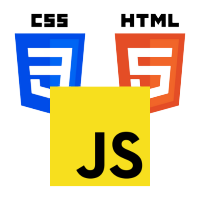

Saudações!
Este site foi produzido com o intuito de demonstrar os conhecimentos adquiridos durante as aulas de publicação de aplicações web com o professor Renan Ponick. Para navegar pelo site, utilize a barra de navegação no topo da página, veja para aonde cada um dos itens levará:
- Home: Página atual
- Hospedagem: Entenda sobre hospedagem, e seus dados técnicos, além de como fazer para hospedar um site.s
- Git e GitHub: Informações sobre os softwares e como configurar chaves SSH/clonar repositórios
- GitHub Pages: Dados sobre como usar a ferramenta para hospedação de sites estáticos e dinâmicos
- Portfolio: Currículo pessoal com minhas competências e dados profissionais.
Tecnologias Relevantes Utilizadas no Projeto:



Passe o mouse
Nos ícones para uma descrição deles